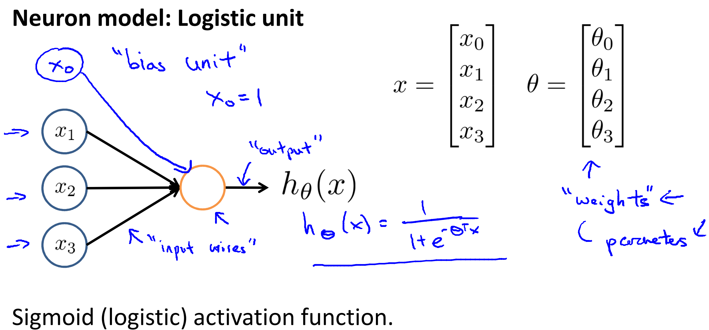
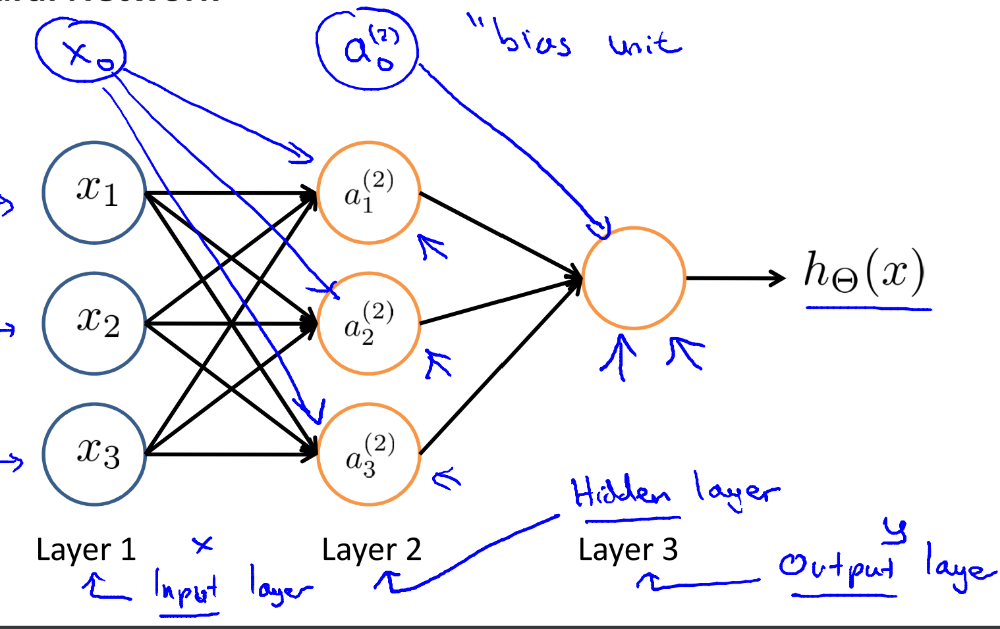

Lecture 1
监督学习(Supervised Learning)
- 监督学习指的就是我们给学习算法一个数据集。这个数据集由“正确答案”组成，再根据这些样本作出预测。
- 回归问题，即通过回归来推出一个连续的输出。
- 分类问题，其目标是推出一组离散的结果。
无监督学习(Unsupervised Learning)
- 在无监督学习中，我们已知的数据。不同于监督学习的数据，即无监督学习中没有任何的标签或者是有相同的标签或者就是没标签。
- 监督学习算法可能会把这些数据分成不同的簇，所以叫做聚类算法。
分离音频代码: [W,s,v] = svd((repmat(sum(x.*x,1),size(x,1),1).*x)*x')
Lecture 2
本章主要介绍单变量线性回归问题，其中的一些基本概念和梯度下降法解决回归问题。
模型表示(Model Representation)
在监督学习中我们有一个数据集，这个数据集被称训练集(Training Set)。
- $m$: 训练集中实例的数量
- $x$: 特征/输入变量
- $y$: 目标/输出变量
- $(x, y)$: 训练集中的实例
- $(x^{(i)}, y^{(i)})$: 第$i$个观察实例
- $h$: 代表学习算法的解决方案或函数也称为假设函数(hypothesis), 从$x$到$y$的映射
- 一种$h$的表达方式: $h_{\theta}(x) = \theta_{0} + \theta_{1}x$. 因为只含有一个特征/输入变量，因此这样的问题叫作单变量线性回归问题。
代价函数(Cost Function)
我们现在要做的便是为我们的模型选择合适的参数(parameters) $\theta_{0}$和$\theta_{1}$, 我们选择的参数决定了我们得到的直线相对于我们的训练集的准确程度，模型所预测的值与训练集中实际值之间的差距就是建模误差(modeling error)
我们的目标便是选择出可以使得建模误差的平方和能够最小的模型参数。 即使得代价函数 $J \left( \theta_0, \theta_1 \right) = \dfrac{1}{2m}\sum\limits_{i=1}^m \left( h_{\theta}(x^{(i)})-y^{(i)} \right)^{2}$ 最小。
- 代价函数也被称作平方误差函数，有时也被称为平方误差代价函数。对于大多数问题，特别是回归问题，都是一个合理的选择。
梯度下降(Gradient Descent)
梯度下降是一个用来求函数最小值的算法，背后的思想是：开始时我们随机选择一个参数的组合$\left( {\theta_{0}},{\theta_{1}},……,{\theta_{n}} \right)$，计算代价函数，然后我们寻找下一个能让代价函数值下降最多的参数组合。我们持续这么做直到找到一个局部最小值（local minimum），因为我们并没有尝试完所有的参数组合，所以不能确定我们得到的局部最小值是否便是全局最小值（global minimum），选择不同的初始参数组合，可能会找到不同的局部最小值。
批量梯度下降(batch gradient descent)算法的公式为:
repeat until convergence{
}
其中$\alpha$是学习率(learning rate)，它决定了我们沿着能让代价函数下降程度最大的方向向下迈出的步子有多大，在批量梯度下降中，我们每一次都同时让所有的参数减去学习速率乘以代价函数的导数。
梯度下降的线性回归(Gradient Descent For Linear Regression)
对我们之前的线性回归问题运用梯度下降法，关键在于求出代价函数的导数，即:
$\dfrac{\partial}{\partial \theta_{j}} J(\theta_{0}, \theta_{1}) = \dfrac{\partial}{\partial \theta_{j}} \dfrac{1}{2m}\sum\limits_{i=1}^{m}(h_{\theta}(x^{(i)}) - y^{(i)})^{2}$
$j=0$ 时：$\dfrac{\partial}{\partial \theta_{0}}J(\theta_{0}, \theta_{1}) = \dfrac{1}{m}\sum\limits_{i=1}^{m}(h_{\theta}(x^{(i)}) - y^{(i)})$
$j=1$ 时：$\dfrac{\partial}{\partial \theta_{1}}J(\theta_{0}, \theta_{1}) = \dfrac{1}{m}\sum\limits_{i=1}^{m}((h_{\theta}(x^{(i)}) - y^{(i)}) \cdot x^{(i)})$
则算法改写成:
repeat until convergence{
}
- 如果你之前学过线性代数, 你应该知道有一种计算代价函数$J$最小值的数值解法, 这是另一种称为正规方程(normal equations)的方法。
- 实际上在数据量较大的情况下，梯度下降法比正规方程要更适用一些。
Lecture 3
本章主要复习线性代数，虽然我线代没考好但是我觉得掌握的只是应该够用了，略(doge)。
Lecture 4
多维特征 Multiple Features
多个变量的模型中的特征为$\left( {x_{1}},{x_{2}},…,{x_{n}} \right)$。
新的注释:
- $n$: 特征的数量
- $x^{\left( i \right)}$: 第 $i$ 个训练实例，是特征矩阵中的第$i$行，是一个向量（vector）
- $x_{j}^{\left( i \right)}$: 特征矩阵中第 $i$ 行的第 $j$ 个特征，也就是第 $i$ 个训练实例的第 $j$ 个特征
支持多变量的假设 $h$ 表示为：$h_{\theta}\left( x \right)=\theta_{0}+\theta_{1}x_{1}+\theta_{2}x_{2}+…+\theta_{n}x_{n}$，这个公式中有$n+1$个参数和$n$个变量，为了使得公式能够简化一些，引入$x_{0}=1$，则公式转化为：$h_{\theta} \left( x \right)=\theta_{0}x_{0} + \theta_{1}x_{1}+\theta_{2}x_{2}+…+\theta_{n}x_{n}$
此时模型中的参数是一个$n+1$维的向量，任何一个训练实例也都是$n+1$维的向量，特征矩阵$X$的维度是 $m*(n+1)$。 因此公式可以简化为：$h_{\theta} \left( x \right)=\theta^{T}X$，其中上标$T$代表矩阵转置。
多变量梯度下降 Gradient Descent for Multiple Variables
代价函数: $J\left( \theta_{0},\theta_{1}…\theta_{n} \right)=\dfrac{1}{2m}\sum\limits_{i=1}^{m}\left( h_{\theta} \left(x^{\left( i \right)} \right)-y^{\left( i \right)} \right)^{2}$
其中：$h_{\theta}\left( x \right)=\theta^{T}X=\theta_{0}+\theta_{1}x_{1}+\theta_{2}x_{2}+…+\theta_{n}x_{n}$， 我们的目标和单变量线性回归问题中一样，是要找出使得代价函数最小的一系列参数。
算法为:
repeat until convergence{
}
即:
repeat until convergence{
}
求导后得:
repeat until convergence{
(simultaneously update $\theta_{j}$ for $i = 1,2,…,n$)
}
我们开始随机选择一系列的参数值，计算所有的预测结果后，再给所有的参数一个新的值，如此循环直到收敛。1
2
3def computeCost(X, y, theta):
inner = np.power(((X * theta.T) - y), 2)
return np.sum(inner) / (2 * len(X))
特征缩放 Feature Scaling
在我们面对多维特征问题的时候，我们要保证这些特征都具有相近的尺度，这将帮助梯度下降算法更快地收敛(标准化，归一化)。
- 最简单的方法是令：$x_{n}=\dfrac{x_{n}-\mu_{n}}{s_{n}}$，其中 $\mu_{n}$是平均值，$s_{n}$是标准差。
学习率 Learning Rate
梯度下降算法的每次迭代受到学习率的影响，如果学习率$\alpha$过小，则达到收敛所需的迭代次数会非常高；如果学习率$\alpha$过大，每次迭代可能不会减小代价函数，可能会越过局部最小值导致无法收敛。
特征和多项式回归 Features and Polynomial Regression
线性回归并不适用于所有数据，有时我们需要曲线来适应我们的数据, 通常我们需要先观察数据然后再决定准备尝试怎样的模型。
- 我们可以令：$x_{2}=x^{2},x_{3}=x^{3}$，从而将模型转化为线性回归模型。
- 如果我们采用多项式回归模型，在运行梯度下降算法前，特征缩放非常有必要。
正规方程 Normal Equation
正规方程是通过求解下面的方程来找出使得代价函数最小的参数的：$\dfrac{\partial}{\partial \theta_{j}}J\left( \theta_{j} \right)=0$ 。
假设我们的训练集特征矩阵为 $X$（包含了 $x_{0}=1$）并且我们的训练集结果为向量 $y$，则利用正规方程解出向量 $\theta =\left( X^{T}X \right)^{-1}X^{T}y$.
上标$T$代表矩阵转置，上标$-1$代表矩阵的逆。
- 只要特征变量的数目并不大，标准方程是一个很好的计算参数$\theta $的替代方法。具体地，只要特征变量数量小于一万，标准方程法，而不使用梯度下降法。
1
2
3
4
5
import numpy as np
def normalEqn(X, y):
theta = np.linalg.inv(X.T@X)@X.T@y #X.T@X等价于X.T.dot(X)
return theta
1 | import numpy as np |
Lecture 5
本章主要是Ovtave的语法学习，现在基本使用Python，跳过本章。
Lecture 6
本章主要是对于解决分类问题的逻辑回归算法的讲解。
分类问题 Classification
我们将因变量(dependent variable)可能属于的两个类分别称为负向类（negative class）和正向类（positive class），则因变量$y\in \{ 0,1 \}$ ，其中 0 表示负向类，1 表示正向类。
假说表示 Hypothesis Representation
我们希望我们的分类器的输出值在0和1之间，因此，我们希望想出一个满足某个性质的假设函数，这个性质是它的预测值要在0和1之间。
我们引入一个新的模型，逻辑回归，该模型的输出变量范围始终在0和1之间。
逻辑回归模型的假设是： $h_{\theta}(x) = g(\theta^{T}X)$
其中：
$X$ 代表特征向量
$g$ 代表逻辑函数（logistic function)是一个常用的逻辑函数为S形函数（Sigmoid function），公式为： $g(z) = \dfrac{1}{1 + e^{-z}}$.
1 | import numpy |
函数图像为:
$h_{\theta}( x )$的作用是，对于给定的输入变量，根据选择的参数计算输出变量=1的可能性（estimated probablity）即$h_{\theta} ( x )=P( y=1|x;\theta)$
判定边界 Decision Boundary
线性规划？反正就是约束条件所导致的曲线分界线。
我们可以用非常复杂的模型来适应非常复杂形状的判定边界。
代价函数
对于线性回归模型，我们定义的代价函数是所有模型误差的平方和。理论上来说，我们也可以对逻辑回归模型沿用这个定义，但是问题在于，当我们将$h_{\theta}(x) = \dfrac{1}{1 + e^{-\theta^{T}X}}$带入到这样定义了的代价函数中时，我们得到的代价函数将是一个非凸函数（non-convexfunction）。
这意味着我们的代价函数有许多局部最小值，这将影响梯度下降算法寻找全局最小值。
我们重新定义逻辑回归的代价函数为: $J(\theta) = \dfrac{1}{m}\sum\limits_{i=1}^{n} Cost(h_{\theta}(x^{(i)}), y^{(i)})$, 其中
再简化得:
带入代价函数得:
1 | import numpy as np |
凸性分析的内容是超出这门课的范围的，但是可以证明我们所选的代价值函数会给我们一个凸优化问题。代价函数$J(\theta)$会是一个凸函数，并且没有局部最优值。
在得到这样一个代价函数以后，我们便可以用梯度下降算法来求得能使代价函数最小的参数了。
repeat until convergence{
}
考虑$h_{\theta}(x) = \dfrac{1}{1 + e^{-\theta^{T}X}}$, 有：
推导略，不信的话自己去算算
- 虽然得到的梯度下降算法表面上看上去与线性回归的梯度下降算法一样，但是这里的$h_{\theta}(x)$与线性回归中不同，所以实际上是不一样的。另外，在运行梯度下降算法之前，进行特征缩放依旧是非常必要的。
除了梯度下降算法以外，还有一些常被用来令代价函数最小的算法，这些算法更加复杂和优越，而且通常不需要人工选择学习率，通常比梯度下降算法要更加快速。这些算法有：共轭梯度（Conjugate Gradient），局部优化法(Broyden fletcher goldfarb shann,BFGS)和有限内存局部优化法(LBFGS)
多类别分类 Multiclass Classification
对每一个类别，创建一个新“伪”的训练集，拟合一个合适的分类器。
就是将一个类标为正类，其他都为负类，得到一系列模型记为$h_{\theta}^{(i)}(x) = p(y = i | x;\theta), i = 1,2,…,k$
最后，在我们需要做预测时，我们将所有的分类机都运行一遍，然后对每一个输入变量，都选择最高可能性的输出变量。
Lecture 7
本章主要介绍正则化方法(Regularization)，它可以改善或者减少过度拟合问题。
过拟合问题 Overfitting
- 丢弃一些不能帮助我们正确预测的特征。可以是手工选择保留哪些特征，或者使用一些模型选择的算法来帮忙（例如PCA）
- 正则化。 保留所有的特征，但是减少参数的大小（magnitude）。
代价函数
某些项导致了过拟合的产生，所以如果我们能让这些项系数接近于0的话，我们就能很好的拟合了。
所以我们要做的就是在一定程度上减小这些参数$\theta$ 的值，这就是正则化的基本方法。我们要做的便是修改代价函数，为$\theta$设置一点惩罚。
假如我们有非常多的特征，我们并不知道其中哪些特征我们要惩罚，我们将对所有的特征进行惩罚，并且让代价函数最优化的软件来选择这些惩罚的程度。这样的结果是得到了一个较为简单的能防止过拟合问题的假设：
其中$\lambda$又称为正则化参数（Regularization Parameter）。 注：根据惯例，我们不对$\theta_{0}$ 进行惩罚。
正则化线性回归 Regularized Linear Regression
repeat until convergence{
}
对$j=1,2,…,n$时的更新式子整理得：
可以看出，正则化线性回归的梯度下降算法的变化在于，每次都在原有算法更新规则的基础上令$\theta$值减少了一个额外的值。
我们同样也可以利用正规方程来求解正则化线性回归模型：
矩阵尺寸为 $(n+1)*(n+1)$。
正则化的逻辑回归模型 Regularized Logistic Regression
1 | import numpy as np |
梯度下降：
repeat until convergence{
}
注：看上去同线性回归一样，但是知道 $h_\theta ( x )=g( \theta^{T} X )$，所以与线性回归不同。
Lecture 8
本章主要对神经网络Neural Network进行表述。
非线性假设 Non-linear Hypotheses
当特征太多时，计算的负荷会非常大。
普通的逻辑回归模型，不能有效地处理这么多的特征，这时候我们需要神经网络。
神经元和大脑 Neurons and the Brain
生物知识。人工智能的梦想就是：有一天能制造出真正的智能机器。
模型表示 Model Representation
神经网络模型建立在很多神经元之上，每一个神经元又是一个个学习模型。这些神经元（也叫激活单元，activation unit）采纳一些特征作为输出，并且根据本身的模型提供一个输出。
下图是一个以逻辑回归模型作为自身学习模型的神经元示例，在神经网络中，参数又可被成为权重（weight）。

我们设计出了类似于神经元的神经网络，效果如下：

其中$x_1$, $x_2$, $x_3$是输入单元（input units），我们将原始数据输入给它们。
$a_1$, $a_2$, $a_3$是中间单元，它们负责将数据进行处理，然后呈递到下一层。
最后是输出单元，它负责计算$h_\theta ( x )$。
神经网络模型是许多逻辑单元按照不同层级组织起来的网络，每一层的输出变量都是下一层的输入变量。上图为一个三层神经网络，第一层称为输入层（Input Layer），最后一层称为输出层（Output Layer），中间一层成为隐藏层（Hidden Layers）。我们为每一层都增加一个偏差单位（bias unit）。
下面引入一些标记法来帮助描述模型：
- $a_{i}^{(j)}$：第$j$ 层的第 $i$ 个激活单元。
- $\theta^{(j)}$：从第 $j$ 层映射到第$ j+1$ 层时的权重的矩阵。其尺寸为：以第 $j+1$层的激活单元数量为行数，以第 $j$ 层的激活单元数加一为列数的矩阵。
对于上图所示的模型，激活单元和输出分别表达为：
$a_{1}^{(2)} = g(\Theta_{10}^{(1)}x_{0} + \Theta_{11}^{(1)}x_{1} + \Theta_{12}^{(1)}x_{2} + \Theta_{13}^{(1)}x_{3})$
$a_{2}^{(2)} = g(\Theta_{20}^{(1)}x_{0} + \Theta_{21}^{(1)}x_{1} + \Theta_{22}^{(1)}x_{2} + \Theta_{23}^{(1)}x_{3})$
$a_{3}^{(2)} = g(\Theta_{30}^{(1)}x_{0} + \Theta_{31}^{(1)}x_{1} + \Theta_{32}^{(1)}x_{2} + \Theta_{33}^{(1)}x_{3})$
$h_{\Theta}(x) = g(\Theta_{10}^{(2)}a_{0} + \Theta_{11}^{(2)}a_{1} + \Theta_{12}^{(2)}a_{2} + \Theta_{13}^{(2)}a_{3})$
上面进行的讨论中只是将特征矩阵中的一列（一个训练实例）喂给了神经网络，我们需要将整个训练集都喂给我们的神经网络算法来学习模型。
我们可以知道：每一个$a$都是由上一层所有的$x$和每一个$x$所对应的决定的。
（我们把这样从左到右的算法称为前向传播算法( FORWARD PROPAGATION )）
把$x$, $\theta$, $a$ 分别用矩阵表示，我们可以得到$\Theta \cdot X=a$ 。
我们可以把$a_0, a_1, a_2, a_3$看成更为高级的特征值，也就是$x_0, x_1, x_2, x_3$的进化体，并且它们是由 $x$与$\theta$决定的，因为是梯度下降的，所以$a$是变化的，并且变得越来越厉害，所以这些更高级的特征值远比仅仅将 $x$次方厉害，也能更好的预测新数据。
这就是神经网络相比于逻辑回归和线性回归的优势。
多类分类
当我们有不止两种分类时，输出层多个神经元来表示多类。
也就是每一个数据在输出层都会出$\{ a_{1}, a_{2}, …, a_{k} \}$，且$a_{i}$中仅有一个为1，表示当前类。
Lecture 9
本章主要是神经网络的学习训练，其代价函数，检验以及初始化相关的介绍。
代价函数
首先引入一些标记：
假设神经网络的训练样本有 $m$ 个，每个包含一组输入 $x$ 和一组输出信号 $y$，$L$ 表示神经网络层数，$S_I$ 表示每层的neuron个数($S_l$ 表示输出层神经元个数)，$S_L$ 代表最后一层中处理单元的个数。
二类分类： $S_L = 0, y = 0 ~ or ~ 1$；
$K$类分类： $S_L = K, y_i = 1$ 表示分到第$i$类（$k >2$）。
逻辑回归中的代价函数为：
在逻辑回归中，只有一个输出变量，又称标量（scalar），也只有一个因变量$y$，但是在神经网络中，可以有很多输出变量，我们的$h_\theta(x)$是一个维度为$K$的向量，并且我们训练集中的因变量也是同样维度的一个向量，因此我们的代价函数会比逻辑回归更加复杂一些，为：
$h_{\theta} (x) \in \mathbb{R}^K$，$(h_{\theta} (x))_i = i$-th output
$J(\theta) = - \dfrac{1}{m} \left[ \sum\limits_{i = 1}^{m} \sum\limits_{k=1}^{K} y_k^{(i)} \log{(h_{\theta}(x^{(i)})_k)} + (1 - y_k^{(i)})\log{(1 - (h_{\theta} (x^{(i)}))_k)} + \dfrac{\lambda}{2m} \sum\limits_{l = 1}^{L-1} \sum\limits_{i=1}^{s_l}\sum\limits_{j=1}^{s_{l+1}} \right]$
这个看起来复杂很多的代价函数背后的思想还是一样的，我们希望通过代价函数来观察算法预测的结果与真实情况的误差有多大，唯一不同的是，对于每一行特征，我们都会给出$K$个预测，基本上我们可以利用循环，对每一行特征都预测$K$个不同结果，然后在利用循环在$K$个预测中选择可能性最高的一个，将其与$y$中的实际数据进行比较。
$h_\theta(x)$与真实值之间的距离为每个样本-每个类输出的加和，对参数进行regularization的bias项处理所有参数的平方和。
反向传播算法 Backpropagation Algorithm
为了计算代价函数的偏导数$\dfrac{\partial}{\partial\Theta^{(l)}_{ij}}J\left(\Theta\right)$，我们需要采用一种反向传播算法。也就是首先计算最后一层的误差，然后再一层一层反向求出各层的误差，直到倒数第二层。
e.g.
$K=4, S_L = 4,L=4$
从最后一层的误差开始计算，误差是激活单元的预测（$a^{(4)}$）与实际值（$y^k$）之间的误差，（$k=1:k$）。
我们用$\delta$来表示误差，则：$\delta^{(4)}=a^{(4)}-y$，然后利用这个误差值来计算前一层误差，则：$\delta^{(3)} = \left( \Theta^{(3)} \right)^T \delta^{(4)} * g’\left( z^{3} \right)$。
其中 $g’(z^{(3)})$是 $S$ 形函数的导数，$g’(z^{(3)})=a^{(3)}\ast(1-a^{(3)})$。而$(θ^{(3)})^{T}\delta^{(4)}$则是权重导致的误差的和。
我们有了所有的误差的表达式后，便可以计算代价函数的偏导数了，假设$λ=0$，即我们不做任何正则化处理时有：
$\dfrac{\partial}{\partial\Theta_{ij}^{(l)}}J(\Theta)=a_{j}^{(l)} \delta_{i}^{l+1}$
上面式子中上下标的含义：
- $l$：目前计算的是第几层。
- $j$：目前计算的激活单元的下标，也将是下一层的第$j$个输入变量的下标。
- $i$：下一层中误差单元的下标，是受到权重矩阵中第$i$行影响的下一层中的误差单元的下标。
误差单元也是一个矩阵，我们用$\Delta^{(l)}_{ij}$来表示这个误差矩阵。第 $l$ 层的第 $i$ 个激活单元受到第 $j$ 个参数影响而导致的误差。
算法表示为：
即首先用正向传播方法计算出每一层的激活单元，利用训练集的结果与神经网络预测的结果求出最后一层的误差，然后利用该误差运用反向传播法计算出直至第二层的所有误差。
在求出了$\Delta_{ij}^{(l)}$之后，我们便可以计算代价函数的偏导数了，计算方法如下：
$D_{ij}^{(l)} :=\dfrac{1}{m}\Delta_{ij}^{(l)}+\lambda\Theta_{ij}^{(l)}$ ${if}\; j \neq 0$
$D_{ij}^{(l)} :=\dfrac{1}{m}\Delta_{ij}^{(l)}$ ${if}\; j = 0$
- 我们可以想象 $\delta^{(l)}_{j}$ 为函数求导时迈出的那一丁点微分，所以更准确的说 $\delta^{(l)}_{j}=\frac{\partial}{\partial z^{(l)}_{j}}cost(i)$
梯度检验 Gradient Checking
当我们对一个较为复杂的模型（例如神经网络）使用梯度下降算法时，可能会存在一些不容易察觉的错误，意味着，虽然代价看上去在不断减小，但最终的结果可能并不是最优解。
为了避免这样的问题，我们采取一种叫做梯度的数值检验（Numerical Gradient Checking）方法。这种方法的思想是通过估计梯度值来检验我们计算的导数值是否真的是我们要求的。
（就模拟求导看看我们用$\delta$算出来的对不对）
对$\theta_1$进行检验：
$\dfrac{\partial}{\partial\theta_1}=\dfrac{J\left(\theta_1+\varepsilon_1,\theta_2,\theta_3…\theta_n \right)-J \left( \theta_1-\varepsilon_1,\theta_2,\theta_3…\theta_n \right)}{2\varepsilon}$
根据上面的算法，计算出的偏导数存储在矩阵 $D_{ij}^{(l)}$ 中。检验时，我们要将该矩阵展开成为向量，同时我们也将 $\theta$ 矩阵展开为向量，我们针对每一个 $\theta$ 都计算一个近似的梯度值，将这些值存储于一个近似梯度矩阵中，最终将得出的这个矩阵同 $D_{ij}^{(l)}$ 进行比较。
随机初始化 Random Initialization
任何优化算法都需要一些初始的参数。到目前为止我们都是初始所有参数为0，这样的初始方法对于逻辑回归来说是可行的，但是对于神经网络来说是不可行的。如果我们令所有的初始参数都为0，这将意味着我们第二层的所有激活单元都会有相同的值。同理，如果我们初始所有的参数都为一个非0的数，结果也是一样的。
- 我们通常初始参数为正负ε之间的随机值。
综合起来 Put It Together
小结一下使用神经网络时的步骤：
网络结构：第一件要做的事是选择网络结构，即决定选择多少层以及决定每层分别有多少个单元。
- 第一层的单元数即我们训练集的特征数量。
- 最后一层的单元数是我们训练集的结果的类的数量。
- 如果隐藏层数大于1，确保每个隐藏层的单元个数相同，通常情况下隐藏层单元的个数越多越好。
- 我们真正要决定的是隐藏层的层数和每个中间层的单元数。
训练神经网络
- 参数的随机初始化。
- 利用正向传播方法计算所有的$h_{\theta}(x)$。
- 编写计算代价函数 $J$ 的代码。
- 利用反向传播方法计算所有偏导数。
- 利用数值检验方法检验这些偏导数。
- 使用优化算法来最小化代价函数。